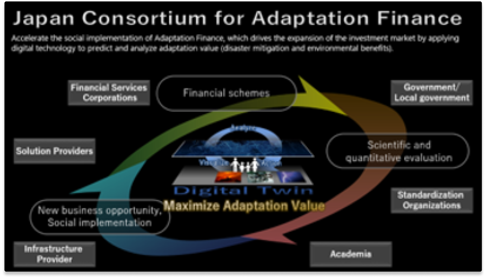

適応ファイナンスコンソーシアム
参画企業(コンソーシアム加入順)
日本電気株式会社
三井住友海上火災保険株式会社
設立目的
デジタル技術を応用して適応価値（減災効果・環境効果）を予測分析し、定量的にわかりやすく投資家に提供することで、投資市場拡大を牽引する適応ファイナンスの社会実装を推進する
活動内容
・投融資や保険などの金融スキームの構築
・デジタル技術を活用した適応策の検討と科学的かつ定量的な評価基準の策定
・効果測定および適応対策方法を活用した新たなビジネス機会の獲得と社会実装
組織構成
会長：岡田 有策（慶應義塾大学教授、元内閣府上席科学技術政策フェロー）
代表幹事：野口 聡一（宇宙飛行士、株式会社国際社会経済研究所 理事）
幹事社：NEC、三井住友海上
